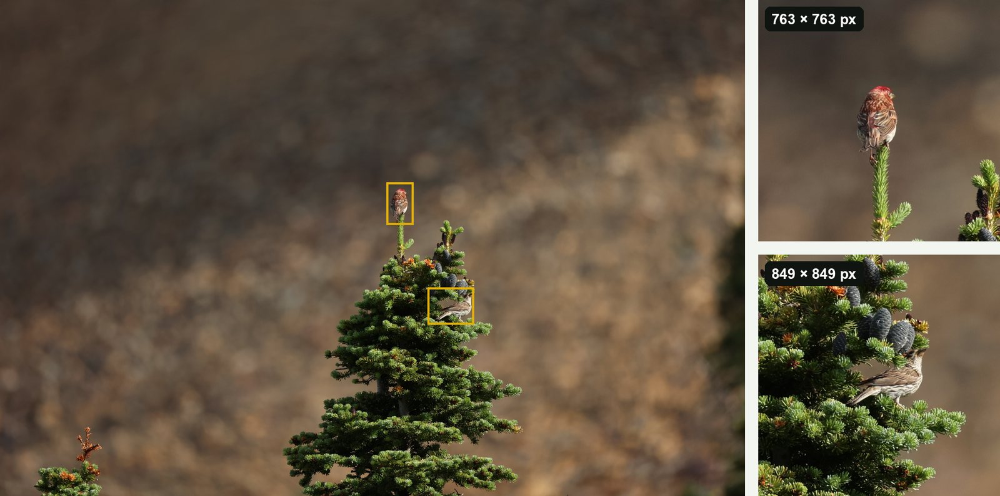
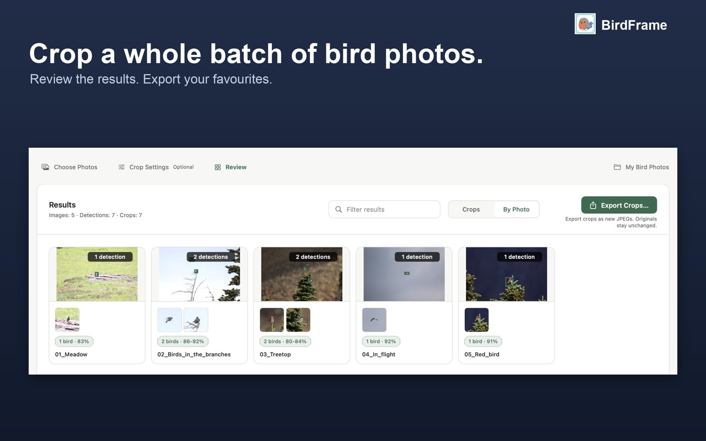

Guides · Updated 27 October 2026
How to batch crop bird photos on a Mac
A day out with a long lens can leave you with a thousand frames where the bird is a small shape among a lot of branches. Cropping them one at a time takes hours. Here is how to crop the whole set in one go, without losing resolution.
Short answer: the usual batch tools on a Mac (Automator, Shortcuts, sips, Lightroom Sync) apply the same crop box to every photo, which doesn't work for birds because the bird moves. BirdFrame, a Mac app, finds the bird in each photo and crops around it, Tight, Balanced or Wide, for a whole album or folder in one run. Every crop is cut from the full-size original. It's free for up to 50 photos per run.
The usual ways to batch crop on a Mac
macOS and the common photo apps have a few ways to crop many photos at once. They all apply one box to every photo:
| Tool | What it does | Good for |
|---|---|---|
| Automator, Crop Images action | "This action trims supported images to the specified dimensions. All crop areas are automatically centered on the image" (Apple's description of the action). | Scans, screenshots, product shots |
| Shortcuts, Crop Image action | Crops every image to one width and height at a fixed position: the centre, a corner, or custom X/Y. | Repeating one crop on many files |
sips in Terminal | Crops every file to one size, centred or at a fixed offset (--cropToHeightWidth, --cropOffset). | Scripts, identical framing |
| Preview | Crops the image you have open. Each photo needs its own selection. | A handful of photos |
| Apple Photos | Crops one photo at a time. Copy Edits doesn't include the crop (more on Photos). | A handful of photos |
| Lightroom Classic | Sync or Auto Sync copies one crop to the selected photos. | Sequences where the subject doesn't move |
A fixed box is fine when the subject sits in the same place in every frame. Birds don't: one frame has the bird on the left branch, the next has it in flight on the right. A centred or synced crop cuts the bird off or misses it. So people end up opening each photo and dragging a crop box around the bird, one at a time. Some workflows also export a smaller copy first, which throws away the detail you carried a long lens for.
Crop every bird in one run with BirdFrame
BirdFrame is a Mac app made for this one job. It finds the bird in each photo, including small, distant and half-hidden birds, and crops around it.

- Choose your photos. An Apple Photos album, or a folder of JPEG, HEIC or RAW files (CR2, CR3, NEF, ARW, ORF, RAF, RW2 and DNG). Subfolders are included, and a RAW+JPEG pair counts as one photo.
- Pick a framing and a shape. Tight (the bird fills about half the frame), Balanced (about a third) or Wide (about a fifth); square, 4:3, 3:2 or 16:9. The preview shows the result before anything is changed.
- Run it. For an album, Crop & Apply saves reversible edits in Photos. For a folder, Crop Photos prepares the results. Either way, Export Crops saves a separate JPEG of each bird.
- Review and keep. Open any result to check it. Changed your mind about the framing? Run it again: in Photos the new crop is taken from the original, not from the cropped copy.
Prefer to watch? The steps are in a 72-second video.

Full resolution, nothing generated
Crops are cut from the full-size original. Nothing is downscaled, upscaled or filled in, so every pixel in the crop is one your camera recorded. Exported crops are saved as high-quality JPEGs and keep the photo's capture date, camera and lens details and, unless you turn it off to protect a nest site, its location. Everything runs on your Mac and no photos are uploaded.
Ready for eBird and iNaturalist
When you choose Export Crops, tick For iNaturalist to get a tight crop of every bird, with file names that start with the capture date and the date and location kept in each file. For eBird checklists, a Balanced crop leaves the "canvas" eBird asks for. See cropping for iNaturalist and cropping for eBird.
How long does it take?
In one real run, 17 photos from a single outing gave 20 bird crops in 16 seconds on an M4 Mac. The smallest bird was 0.03% of the frame. Larger batches simply run longer; you can leave it going and come back to the results. Apple silicon Macs are fastest.
What it costs
BirdFrame is free for up to 50 photos per run, as many runs as you like, with every feature included. To crop bigger batches in one go, it's a one-time $29.99. No subscription. It needs macOS 15 or later.
Questions
Can Lightroom or Apple Photos batch crop around each bird?
No. Lightroom can sync one crop to many photos, but that applies the same box to every photo, and the bird is somewhere different in each frame. Apple Photos can't copy a crop at all. BirdFrame finds the bird in each photo and crops around it.
Does BirdFrame change my original photos?
No. In Apple Photos the crops are reversible edits, so Revert to Original brings the full photo back. From a folder, BirdFrame saves new JPEGs and never changes the source files.
Does it work with RAW files?
Yes. From a folder it reads Canon CR2 and CR3, Nikon NEF, Sony ARW, Fujifilm RAF, OM System and Olympus ORF, Panasonic RW2 and DNG. A RAW+JPEG pair counts as one photo, and crops are saved as JPEGs.
What if there are two birds in one photo?
Export Crops, after an album or folder run, saves a separate JPEG of each bird. Crop & Apply in Apple Photos gives each photo one crop that frames all its birds, because a Photos edit can hold only one crop.
Crop every bird in one go, at full resolution. BirdFrame finds the birds in a whole album or folder and crops each one from the full-size original. Free for up to 50 photos per run.